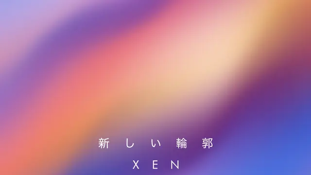
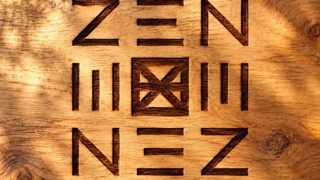
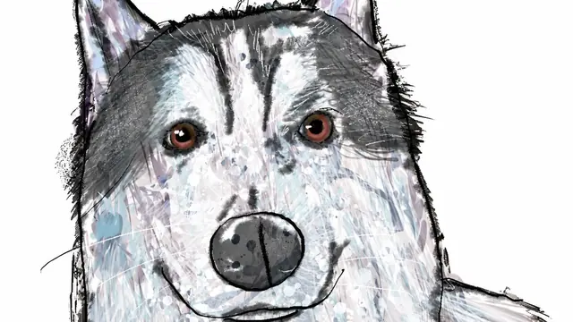
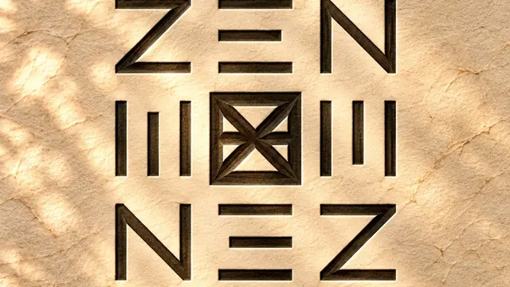

お知らせ一覧へ移動
INDEX
トップページ
NEWS
お知らせ・最新情報
ABOUT XEN
XENについて
DISCOVER XEN
XENを知る
STUDIO
スタジオについて
CREATOR
クリエイター紹介
WORKS
制作・作品
STORYBOOKS
絵本
ANIMATION
アニメーション
MUSIC
音楽
CINEMATIC
映像作品
PHOTOGRAPHY
写真
DESIGN
デザイン
SHOP
ショップ
ARCHITECTURE
建築設計
SPACE
空間デザイン
ART GALLERY
アート作品
SNS MANAGEMENT
SNS運用
PRICING
料金案内
CONTACT
制作相談
NEWS
お知らせ・最新情報
2026.11.02
YouTube
【渋谷ハロウィン2026】仮装した人に片っ端から声をかけた結果
2026.11.01
MUSIC
『途中のままで』Music Video公開
2026.10.26
NEWS
写真を17枚追加
2026.10.24
DESIGN
『脚下照顧』『日日是好日』『善因善果』『STATE OF MIND』

2026.10.24
MUSIC
楽曲『新しい輪郭』『空に溶ける』

2026.10.23
MUSIC
楽曲『ひかりのありか』
2026.10.23
DESIGN
K18シグネットリング2作品

2026.10.23
NEWS
アートワークを43作品追加

2026.10.22
MUSIC
楽曲『途中のままで』
2026.10.20
NEWS
ホームページリニューアル
〈
1
2
3
〉